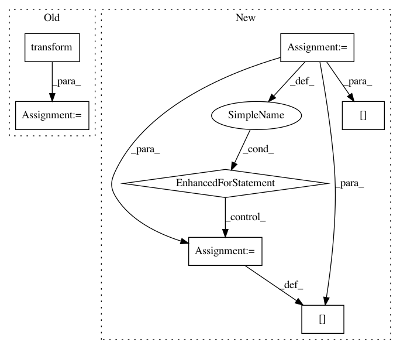

71432d1890209628e189edf04d7d623160943718,autokeras/hypermodel/preprocessor.py,TextToNgramVector,transform,#TextToNgramVector#Any#Any#,182
Before Change
sentence = nest.flatten(x)[0].numpy().decode("utf-8")
data = self.vectorizer.transform([sentence]).toarray()
if self.selector:
data = self.selector.transform(data).astype("float32")
return data[0]
def output_types(self):
return (tf.float32,)
After Change
token_pattern = re.compile(r"(?u)\b\w\w+\b")
tokens = self._word_ngram(token_pattern.findall(x.lower()))
for feature in tokens:
if feature in self.vocabulary:
feature_idx = self.vocabulary[feature]
tf[feature_idx] += 1
result = tf * self.k_best_idf_values
result = normalize([result], norm=self.norm, copy=False)[0]
return result
In pattern: SUPERPATTERN
Frequency: 3
Non-data size: 7
Instances
Project Name: jhfjhfj1/autokeras
Commit Name: 71432d1890209628e189edf04d7d623160943718
Time: 2019-12-18
Author: 33369174+Davidsirui@users.noreply.github.com
File Name: autokeras/hypermodel/preprocessor.py
Class Name: TextToNgramVector
Method Name: transform
Project Name: NifTK/NiftyNet
Commit Name: 03e8525394683bb5da7668330cd910c87c7d4501
Time: 2017-04-03
Author: l.fidon@ucl.ac.uk
File Name: data_augmentation.py
Class Name:
Method Name: rand_intensity_normalisation